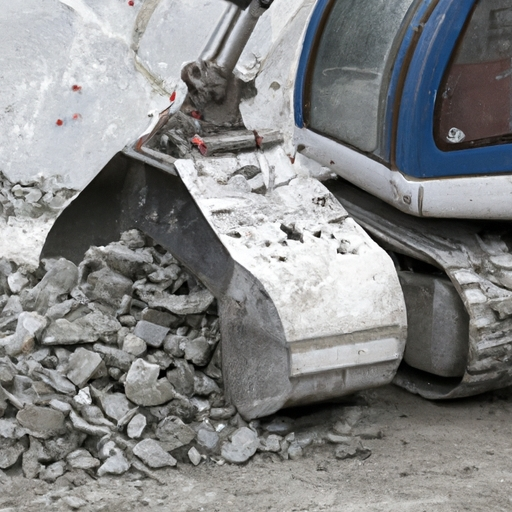

News
Crusher For Sale
Crusher For Sale
Jaw Crushers
Impact Crushers
Cone Crushers
Mobile Crushers
Operating Principles of Concrete Crushers
Operating Principles of Concrete Crushers
Crushing process
Power source
Material feed
Discharge system
Applications of Concrete Crushers
Applications of Concrete Crushers
Demolition projects
Recycling centers
Construction sites
Landscaping projects
Maintenance and Repairs of Concrete Crushers
Maintenance and Repairs of Concrete Crushers
Regular inspections
Lubrication checks
Wear parts replacement
Troubleshooting common issues
Environmental Impact of Concrete Crushers
Environmental Impact of Concrete Crushers
Dust and noise pollution
Energy consumption
Waste management practices
Emission regulations
About Us
Contact Us
GrinderCrusherScreen
What is the purpose of concrete crushers in construction?
Sep 14, 2024
Concrete crushers are essential tools in the construction industry, designed to break down large concrete blocks into smaller pieces that can be easily disposed of or recycled.. These machines play a crucial role in various construction projects, from demolition of old buildings to road construction and landscaping. The main purpose of concrete crushers is to reduce the size of concrete waste materials, making it easier to handle and transport them.
What are the different types of concrete crushers available on the market?
Sep 14, 2024
When it comes to choosing a concrete crusher, there are several different types available on the market to suit various needs and preferences.. One of the most common types is the jaw crusher, which uses a stationary jaw to break down concrete into smaller pieces.
How to effortlessly crush concrete with our top-of-the-line crushers
Sep 14, 2024
At our company, we understand that sometimes our customers may need additional resources or support when using our top-of-the-line crushers to effortlessly crush concrete.. That's why we offer a range of services to help make the process as smooth and efficient as possible. One way we provide support is through our customer service team, who are always available to answer any questions or concerns you may have.

Discover the secret to maximizing efficiency on your construction site with our powerful concrete crushing machines
Sep 14, 2024
Are you tired of wasting time and money on inefficient concrete crushing machines?. Look no further!
Benefits of Using Concrete Crushers for Demolition Projects
Sep 14, 2024
Flexibility plays a crucial role in project planning and execution.. When it comes to demolition projects, having the ability to adapt to changing circumstances is essential for ensuring the success of the project.
Different Types of Concrete Crushers and Their Uses
Sep 14, 2024
When it comes to using concrete crushers, safety precautions are absolutely essential.. These powerful machines are designed to break down large pieces of concrete into more manageable sizes, but they can also pose serious risks if not used properly. One of the most important safety precautions when using a concrete crusher is wearing appropriate personal protective equipment (PPE).